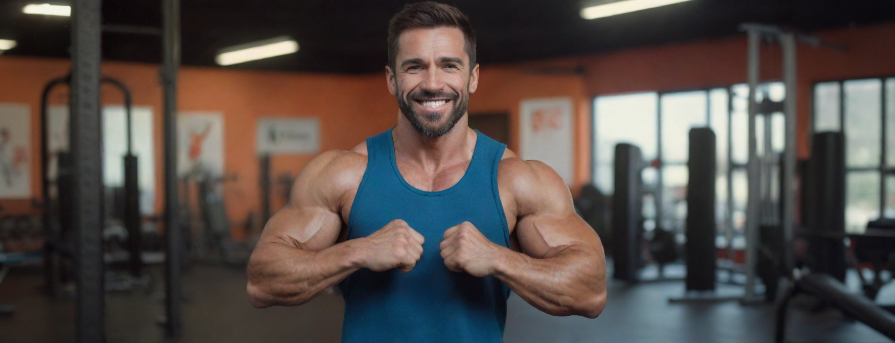
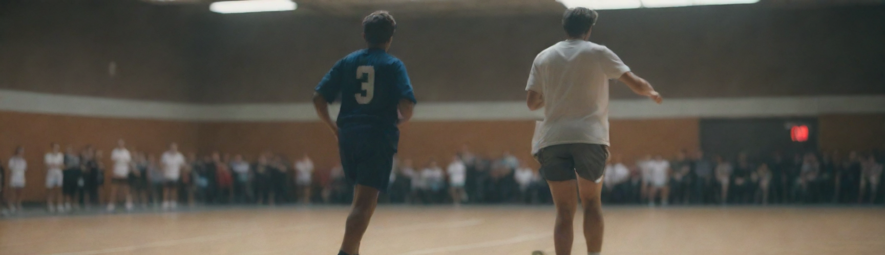

Évènements

Mr.Radiergumma ouvrira les portes de ses salles privées d'entrainement au public
Le célèbre Mr.Radiergumma, un espagnol qui a su se faire remarquer lors des JO de Tokyo 2020 accueillera des centaines de visiteurs le 31 février prochain pour une séance d'entrainement dite "ouverte au public". C'est une occasion à ne pas manquer pour les fans du sport ou de notre cher espagnol. Il dit souhaiter exposer ses talents au public, "bénir le commun de sa performance magistrale".
C'est la 15ème fois que le public pourra assister à sa démonstration. Il avait déjà montré sa puissance et technique lors d'évènements similaire 3 fois l'année dernière, ainsi que 5 fois l'année précédente.
Malgré cela, le public reste enthousiaste, et ces centaines de fans ont exprimé leur joie via le réseau social "oiseau bleu". L'utilisateur "xkeeeka" écrit "j'adore beaucoup je suis très heureux" ; un témoignage affectueux envers la star. Certains expriment néanmoins un énervement face à la répétition de ce style d'évènements; "heyehegy" signale "mais p***** c la 50 eme fois JE VEUX CA AVEC LE BEAU ITALIEN BORDEL".

Les Jeux Olympiques de 2024 s'annoncent plus difficiles que jamais
Nous attendons avec impatience l'annonce des placements de départs lors du prochain tournoi prenant place lors des Jeux Olympiques. Nos yeux sont rivés avec impatience sur la page d'annonce, encore vierge de toute déclaration. On rappelle l'importance de ces positions de départ, qui peuvent déterminer l'issue du reste du tournoi.
On vous tient au courant dès que l'information sort !

Un collège WingBall ?
Le premier collège prenant en charge des aspirants du grand sport qu'est le Wingball sera ouvert pour la rentrée 2024. Au programme, cours de stratégie, intensification du programme sportif ainsi qu'un grand nombre d'aménagements. Beaucoup de parents se considèrent intéressés par cette offre. Mais cette annonce génère aussi des inquiétudes, auprès de parents stressés que leur enfant se concentre trop sur le côté sportif du collège et pas assez sur les études en elles-mêmes. Le WingBall est incertain, mais du talent et du travail acharné peuvent changer la vie d'un homme.

Démonstration lors du nouvel an
2024 approches, et Dubai a décidé de célébrer son arrivée avec les grands moyens! Le 01 Janvier à 00h05, l'équipe de Wingball de la Belgique accompagnera les feux d'artifice pour une représentation dans un stade crée pour l'occasion !

L'athlète français Chriotsof Blanquette prévoit une tournée de dédicaces
Après la sortie de son autobiographie "Un sportif de haut vol", Chriotsof a déjà confirmé des dates ainsi que des lieux où il se rendra afin de signer son livre. Il souhaite en priorité se rendre dans le Super U de Dompierre-sur-Besbre, un endroit "sentimental" où il aurait tenu son premier ballon dans les mains.

Match amical entre la France et la Corée du Sud
La France et la Corée du Sud se préparent pour un nouveau match amical organisé en Corée du Sud en Mars prochain. Les fédérations françaises et coréennes ayant mis en place la rencontre souhaite promouvoir un fair-play, une amitié grandissante entre leurs deux pays et un respect de l'autre. Ce match est, d'après elle, une occasion de solidifier les liens entre les deux pays à travers leur passion commune pour ce sport.
Malgré un optimisme évident du côté des organisations organisant l'évènement, les coachs et joueurs semblent divisés. Certains se rappellent encore le match poignant de 2014 durant lequel deux français ont malheureusement dû quitter le match en urgence après une action coréenne. Ce souvenir douloureux reste dans le coeur des français, et ce futur match sera sans aucun doute explosif.
Bien que l'enjeu soit mineur le match amical semble important aux yeux des joueurs ainsi que des fans. Ils ont tous une grande fierté à défendre. Certains joueurs se sont exprimés sur les ressentis vus dernièrement, comme Marke Lemoyen ; "On sait que nos fans sont passionnés, mais nous souhaitons un match sain et agréable.". Ils ne semblent pas tous du même avis ; Claude Uiol évoque "la raclée qu'ils vont se prendre" et "une joie de les tabasser". Il a été rappelé a l'ordre et a supprimé son post. Ce match s'annonce plein de passion et ferveur.